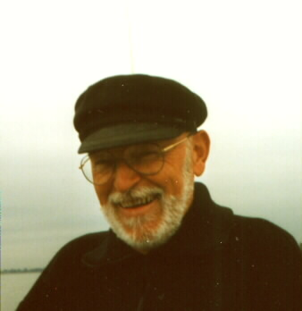
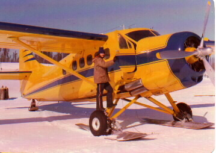
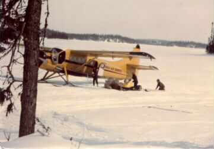
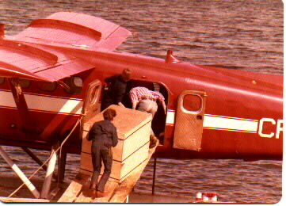
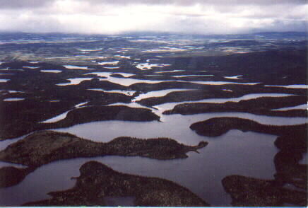
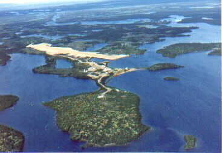
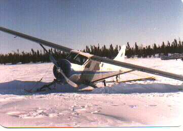
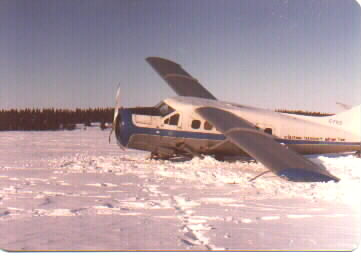
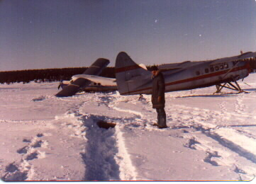
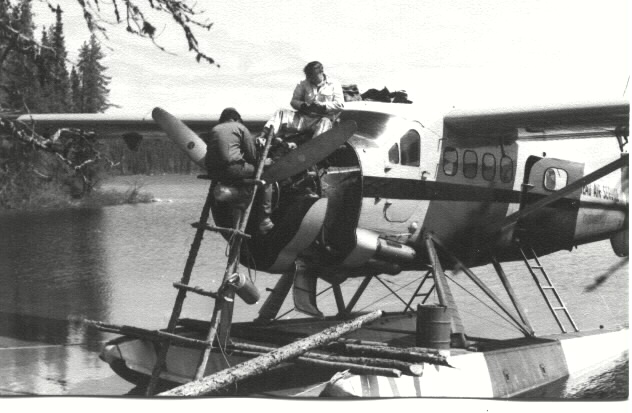

Breton bretonnant — il parlait le breton — originaire du sud Finistère (Scaër). Émigré au Canada depuis février 1955. Un peu aventurier, pêcheur, chasseur, fanatique d'aviation.
Scaër, en Bretagne, où il a grandi et s'est marié, lui rend hommage et raconte son histoire : Scaër se souvient de Marcel →
Il a été comblé au Québec par la nature et par la facilité avec laquelle on peut s'impliquer dans ce monde fabuleux qu'est le vol de brousse.
95% de son temps de vol s'est fait sur les skis ou sur flotteurs. Il a ainsi pu accumuler plusieurs milliers d'heures et une expérience unique et enrichissante dans ce genre de vol.
Ce travail lui a permis de rencontrer une foule de personnages intéressants et hauts en couleurs : des pilotes, des Indiens, des Esquimaux, des prospecteurs, des géologues, des ingénieurs forestiers, des garde-feux, des traceurs de lignes, des chasseurs de phoques... Beaucoup d'entre eux lui ont fait connaître des moments très forts. Il en a gardé des souvenirs inoubliables.








